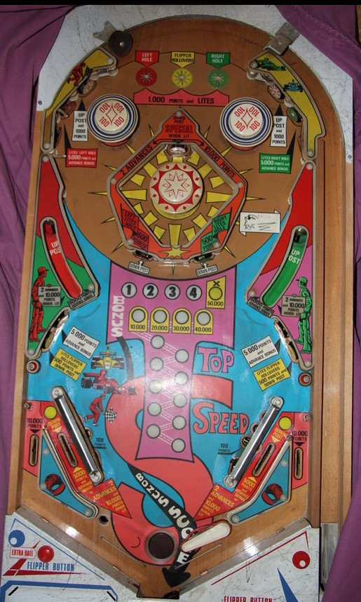

Top Speed is the 4-player version. Top Racer is the 1-player version with identical rules and scoring.
Build bonus however you can. In lanes and the captive ball saucers on the sides of the table award 5,000 points and a bonus advance when not lit, or 10,000 and 2 advances when lit. Anything in the game that scores 100 points contributes 1/10 of a bonus advance, so rattling around in the top pop bumpers can be surprisingly valuable. The center captive ball structure is fun when it gets moving, but too dangerous to shoot directly.
The below picture of Top Speed's playfield, unfortunately missing its left flipper, was taken from Pinside, where it is listed as image #2022548.

Red, yellow, and green features score 5,000 points and 1 bonus advance, or 10,000 and 2 advances when lit. Making a feature when lit unlights that colour. The red feature is the left captive ball, and is lit via the left top star rollover or the red standup targets in the upper left or on the center structure. The yellow feature is both in lanes, which are lit via the middle top star rollover or the yellow standup targets in the lower left or lower right. The green feature is the right captive ball, and is lit via the right top star rollover or the green standup targets in the upper right or on the center structure.
Top star rollovers score 1,000. The red and green standup targets on the center structure score 500. The red and green standup targets in the upper left and right score 5,000 and a bonus advance, and the yellow standup targets in the lower left and right score 500 points.
In the middle of the game, there is a large chamber featuring a captive ball and a pop bumper. Hitting the center captive ball into the chamber pop bumper causes the ball to rattle around for a while; the pop bumper and wall switches score 100 points, so bonus builds somewhat quickly when the ball is rattling around here. At the top of the chamber is a standup target which awards 10,000 points and 2 bonus advances when not lit, or Special when lit, and it is lit when all 3 colours (red, yellow, green) are lit at the same time. It is very rare for the chamber captive ball to hit this target, and nearly impossible to earn the Special on purpose. The chamber captive ball settles at the bottom of the chamber; shooting it directly to start the chamber moving is quite dangerous, due to it effectively assuming the role of "sucker target" in the center of the game.
Power to the chamber pop bumper is not cut during the end of ball sequence. It is theoretically possible to hit the chamber captive ball, drain quickly, and have the ball still be rattling around the chamber and recording switch hits (and as such, bonus advances) when the next ball in play begins.
In lanes and side captive balls award 1 bonus advance, or 2 bonus advances when lit. See above for how to light these features. The red and green standup targets in the top corners of the game and the white standup targets in the lower left and right award 1 bonus advance.
Anything that scores 100 points anywhere in the game awards 1/10 of one bonus advance, indicated by the track of inserts below the bonus ladder. 100-point switches include all three pop bumpers, both slingshots, and the wall switches in the center chamber. Features that score 500 points, such as the red, yellow, and green targets in the lower half of the game, are the equivalent of five 100-point switches, so they also give credit for 1/2 of a bonus advance.
Each bonus advance is worth 10,000 points in base bonus instead of the typical 1,000, meaning the end of ball bonus is a significant portion of scoring on any game of Top Speed/Top Racer. Max bonus is 200,000 points. There is no bonus multiplier, bonus holdover, or mid-ball bonus collect.
Top Speed/Top Racer has a conventional in/out lane setup, but with very slanted in lanes whose entrances are very close to the edges of the table. Out lanes score 10,000 points. In lanes score 5,000 points and a bonus advance, or 10,000 points and 2 advances if the in lanes have been lit via pressing the middle top rollover button or either yellow standup target in the lower left and lower right.
There is a center post between the flippers that completely blocks off the flipper gap when raised. To raise the post, hit either of the white standup targets in the upper left or upper right (which score 1,000 points), or make a full shot to the left or right captive ball. The post is lowered by hitting any red, yellow, or green target in the lower half of the table, the top standup target in the center chamber, or either in lane. It is helpful to have the post up as much as possible, because a ball exiting the top of the table rolling down the side walls is liable to be directed straight toward the center drain.